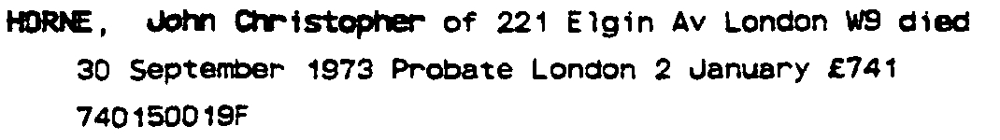
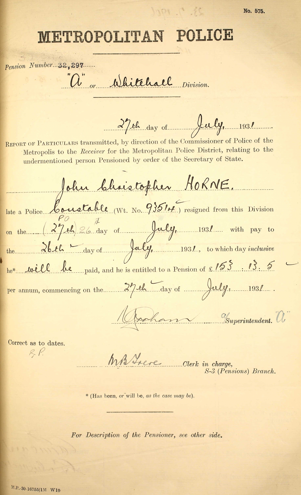
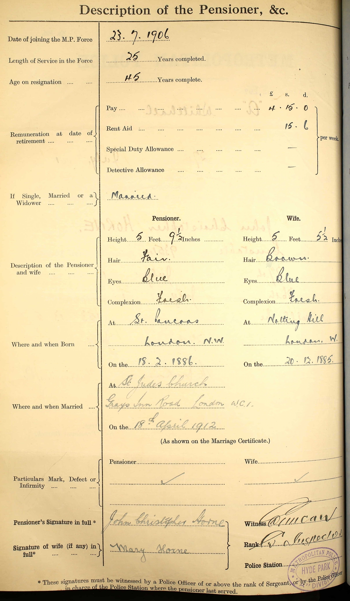
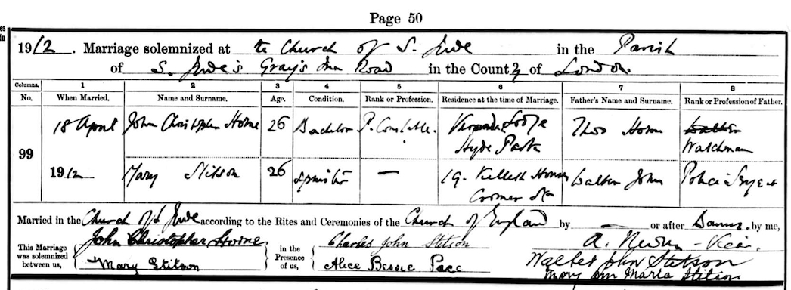
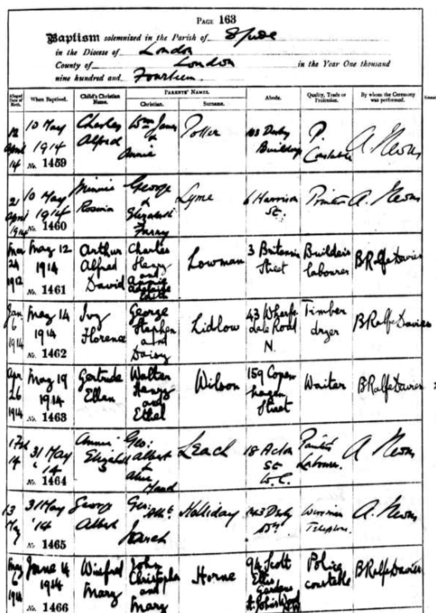
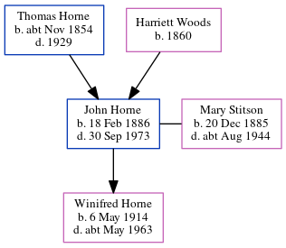

John Christopher Horne 1886 - 1973
[ Home ] | [ Calendar ] | [ Surnames Index ] | [ Census Index ] | [ Family History ]A police constable and the child of Thomas Horne (a brewer's drayman) and Harriett Woods, John Horne, the first cousin twice-removed on the father's side of Nigel Horne, was born in St Pancras, London, England on Feb 18, 18861,2,3, was baptized there on Apr 21, 1886 and married Mary Stitson (with whom he had 1 child, Winifred Mary) at St Jude's Church, Gray's Inn Road, Camden, London, England on Apr 18, 19124.
During his life, he was living at Britannia Street in St Pancras on Mar 31, 19018; at Police Station, Hyde Park, London on Apr 2, 19117; at 94 Scott Ellis Gardens, St John's Wood, London on Jun 14, 19146; at 19 Grittleton Road, Maida Vale, London on Sep 29, 19391 (when he was living with his sisters, Rosa Emily and Hilda Alice); and at 221 Elgin Avenue, London, England in 1973.
He died on Sep 30, 1973 in Paddington, London, England3 and was buried in Camden on Oct 5, 19735.
Parents
- Thomas Warner was born c. Nov 1854
- Harriett was born in 1860
Children
- Winifred Mary was born on May 6, 1914
Citations
- 1939 Register - Findmypast (was the head of the household)
- England & Wales births 1837-2006 - Findmypast
- England & Wales deaths 1837-2007 - Findmypast
- England & Wales marriages 1837-2008 - Findmypast
- https://www.deceasedonline.com/servlet/GSDOSearch?DetsView=Summary&src=ext&fileid=1876743
- From daughter's baptism record
- 1911 Census for England & Wales - Findmypast (was age 24)
- 1901 England, Wales & Scotland Census - Findmypast (was age 15 and the son of the head of the household)
Media
John Christopher Horne - probate

John Christopher Horne resign 1

John Christopher Horne resign 2

John Christopher Horne - Mary Stitson - Marriage Certificate

Winifred Mary Horne - baptism

England & Wales births 1837-2006 - BMD/B/1886/1/AZ/000290/034
1911 Census for England & Wales - GBC/1911/RG14/00426/0259/13
England & Wales deaths 1837-2007 - BMD/D/1973/4/AZ/000603/025
England & Wales marriages 1837-2008 - BMD/M/1912/2/AZ/000463/079
1939 Register Transcription - TNA-R39-0430-0430B-012-10
Family Tree
Generated by ged2site. Last updated on Jun 11, 2024